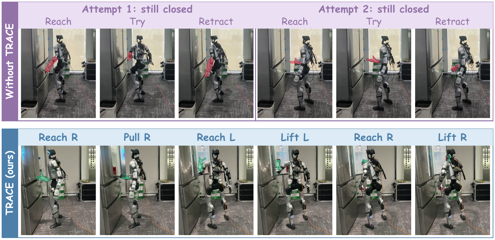
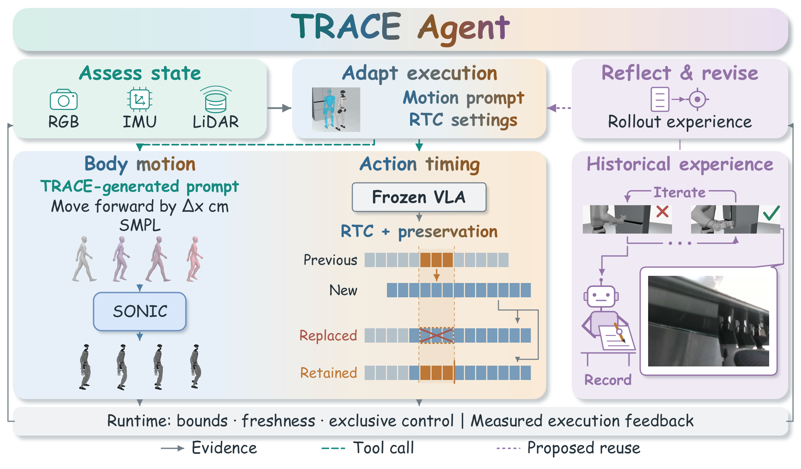
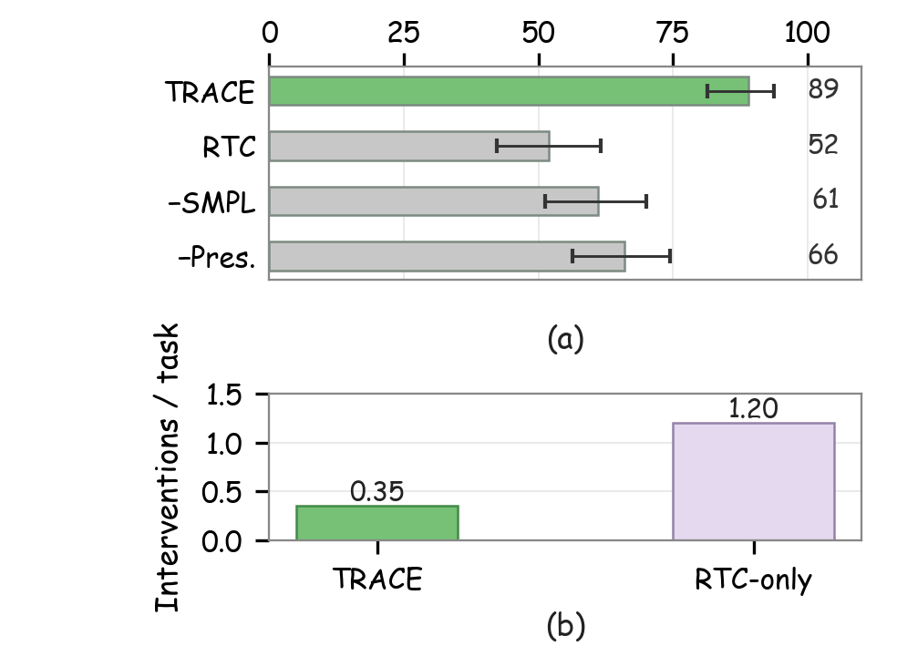
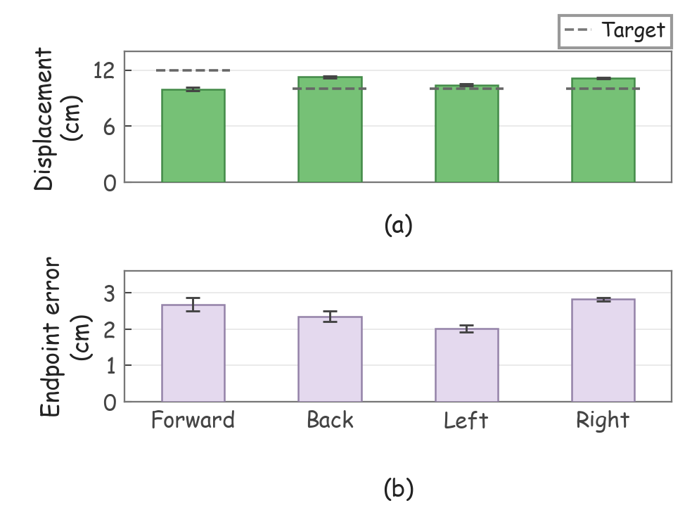

Prepare the body
Goal-conditioned SMPL motion adjusts the operating pose and is translated for SONIC whole-body execution.
CVPR 2027
Prepare the body. Preserve the interaction. Revise from experience.
TRACE coordinates body adaptation, action timing, and experience-guided revision to keep multi-stage humanoid manipulation moving forward—with fixed VLA and SONIC weights.

After navigation, small stance errors can put a target out of reach. During asynchronous inference, replanning can replace a contact action before it finishes. TRACE treats these as execution conditions to diagnose and revise at runtime.
Its agent combines task goals, visual feedback, predicted actions, publication records, and measured states. It selects an intervention, checks the physical result, and preserves useful experience for the next decision.
TRACE joins body preparation, execution timing, and historical experience around a shared feedback loop.

TRACE observes the task, selects and configures tools, then verifies the realized effect before the next turn.
Goal-conditioned SMPL motion adjusts the operating pose and is translated for SONIC whole-body execution.
Adaptive RTC handles inference delay while bounded phase preservation lets selected interactions finish.
Measured effects and task progress inform the next diagnosis and intervention, across execution turns.
Door-opening and object-grasping tasks following navigation; 100 episodes per method.
TRACE completes 89 of 100 tasks, versus 52 for RTC-only. Removing SMPL or phase preservation yields 61 and 66 successes. Mean human interventions fall from 1.20 to 0.35 per task; whiskers show Wilson 95% confidence intervals.

From generated whole-body references to measured SONIC execution in simulation.
The gallery compares generated SMPL motions with their measured SONIC simulation counterparts for multiple upper-body movements.
Repeatable forward, backward, left, and right corrections bring the robot toward a more useful operating pose. Each direction contains 100 simulator executions.

Multi-stage humanoid manipulation requires each execution turn to establish suitable body configurations and interaction conditions for the next. Task stagnation can arise from unsuitable reach or repeated replacement of critical actions during asynchronous inference, requiring interventions grounded in execution evidence. We introduce TRACE, a task-aware runtime Agent coordination framework. The Agent combines task goals, visual feedback, predicted actions, publication records, and measured states to diagnose execution bottlenecks, jointly consider operating pose and policy-execution parameters, and select and configure appropriate tools. After each intervention, it verifies the realized effect and distills execution outcomes into historical experience for revising subsequent decisions. This connects diagnosis, intervention, verification, and revision across turns. TRACE keeps VLA and SONIC weights fixed, adapting operating conditions, execution settings, and task memory at runtime. In real-robot experiments with 100 episodes per method, TRACE achieves 89% task success, outperforming RTC-only by 37 percentage points while reducing mean human interventions from 1.20 to 0.35 per task. Removing SMPL adaptation or phase-aware preservation reduces success to 61% and 66%, respectively, supporting the contribution of spatial preparation and execution continuity to task completion.
Methods, experimental setup, component studies, and further analysis are available in the manuscript.
Open PDFResearch manuscript
Download PDF